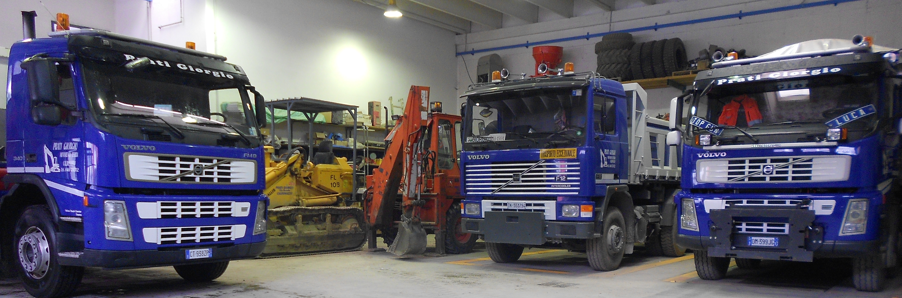
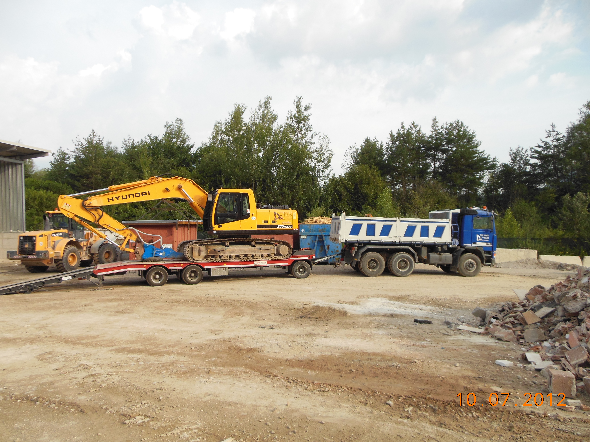
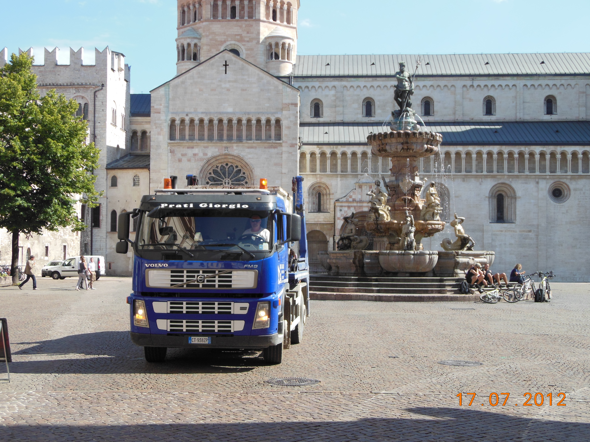
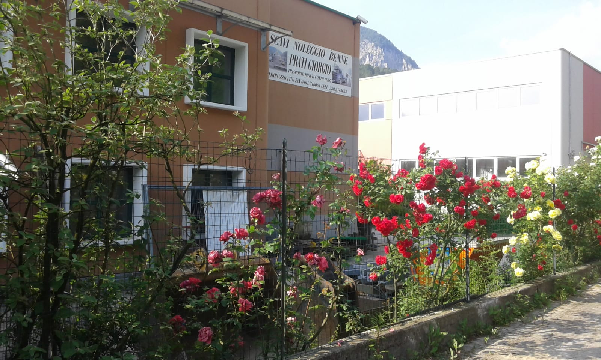

03 • Documentazione Fotografica
I Nostri Mezzi al Lavoro nei Cantieri
Scorri lo slider automatico oppure clicca su qualsiasi foto della griglia sottostante per ingrandirla a pieno schermo.

Nata dall'impresa paterna attiva fin dagli inizi degli anni '60, la ditta Prati Giorgio mette a disposizione di imprese edili e privati mezzi pesanti, escavatori e container scarrabili per ogni lavoro di scavo, fornitura inerti e smaltimento rifiuti speciali.

La ditta Prati Giorgio opera nel settore degli scavi dal 1987. Nata dall'esperienza dell'impresa del padre, operativa fin dagli inizi degli anni '60, vanta decenni di lavoro concreto nei cantieri trentini e collaborazioni consolidate con imprese edili di primo piano.
Ci occupiamo direttamente di tutte le applicazioni del settore: scavi e sbancamenti, sgombero neve, fornitura di materiali inerti, trasporti conto terzi e, soprattutto, trasporto e smaltimento di rifiuti speciali ed edili.


Esperienza, professionalità e precisione nella realizzazione dei lavori sono un marchio di fabbrica su cui Prati Giorgio basa la sua attività fin dal 1987, proseguendo la tradizione dell'impresa paterna.
Grazie ad attrezzature all'avanguardia e tecnologicamente specializzate, l'azienda soddisfa al meglio ogni tipologia di servizio richiesto dalla propria clientela, operando sia nei centri storici trentini sia nei cantieri infrastrutturali e montani.
Dal 1987 ogni intervento è curato direttamente con parco macchine di proprietà per opere pubbliche, edilizia privata, infrastrutture e gestione ambientale dei rifiuti di cantiere.
Esecuzione di scavi di sbancamento e in trincea per edilizia pubblica, privata e infrastrutturale:
Demolizione meccanica di fabbricati e strutture in calcestruzzo o muratura, con caricamento e avvio a recupero delle macerie.
Servizio tempestivo di pulizia e sgombero neve durante la stagione invernale per strade, accessi industriali e piazzali.
Servizio autorizzato di autotrasporto conto terzi, trasporto rifiuti edili e movimentazione di rifiuti speciali verso centri di recupero.
Consegna diretta in cantiere di ghiaie, sabbie, stabilizzati e materiali inerti naturali o riciclati certificati.
Noleggio container scarrabili per rifiuti di cantiere con capacità di carico fino a 140 quintali, consegna e ritiro rapido presso il CRV.
Scorri lo slider automatico oppure clicca su qualsiasi foto della griglia sottostante per ingrandirla a pieno schermo.
Il nostro magazzino e deposito mezzi si trova in Via Prati, 25/M – 38052 Caldonazzo (TN) (Domicilio Fiscale storico: Via Brenta, 20 – Caldonazzo), in una posizione strategica per raggiungere rapidamente tutti i cantieri della Valsugana e della provincia di Trento.

Chiamaci o scrivici per richiedere il posizionamento di un container, la fornitura di inerti o un preventivo di scavo.
Via Prati, 25/M
38052 Caldonazzo (TN)
0461-718199
380 3144683
crv@crv.srl